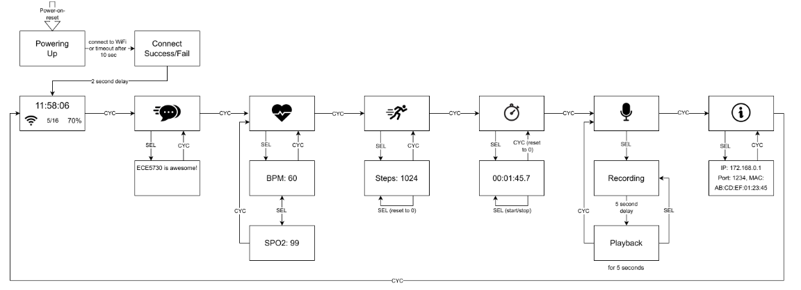
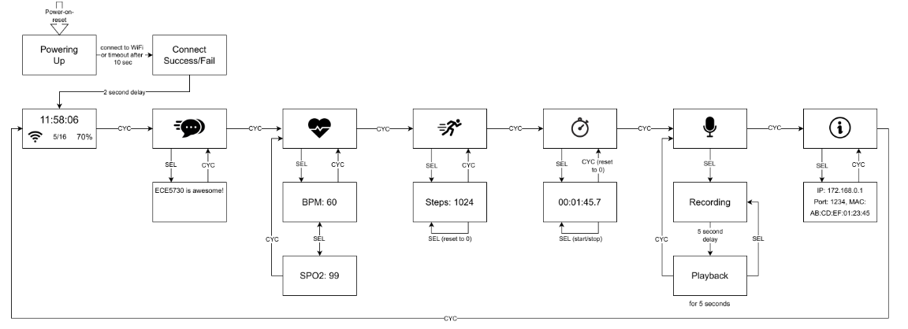

About Me
Hello! My name is Katarina Duric and I am a Master's student in Electrical and Computer Engineering at Cornell University. My interests lie in Digital and Analog VLSI Design, digital verification and RTL design, as well as hardware design. Below you can find some of my projects!
Projects
Delay-Locked Loop for High-Speed Photonic Links (In Progress)
Designed and implemented a Delay-Locked Loop (DLL) for high-speed photonic links to enable precise clock-data recovery in massively parallel WDM systems. Contributed to a broader effort optimizing photonic interconnects for mmWave transceivers, focusing on energy-efficient signal distribution and synchronization in beamforming architectures.
Dynamic Fast Robot
Designed a fast autonomous robot implementing software and firmware which enables time of flight sensing, closed-loop PID/orientation control, Kalman filtering, Bayes filtering, mapping, localization, and path planning.
Tap to view Project Website
 

Raspberry Pi DIY Smartwatch
The aim of this project was to create a custom smartwatch using a Raspberry Pi Pico W because of its great functionalities, while maintaining a simple and compact design embodying industry standard smartwatches and their common features.
Tracking Vehicles in Real-Time
Worked with a local city NGO to develop a system which collects traffic data to inform environmental data analysis. Leveraged LoRaWAN technology to transmit data in real time, and computer vision to track trucks.
Contact
In case you have questions, feel free to reach out at kd374@cornell.edu